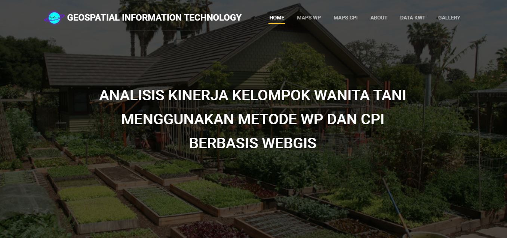
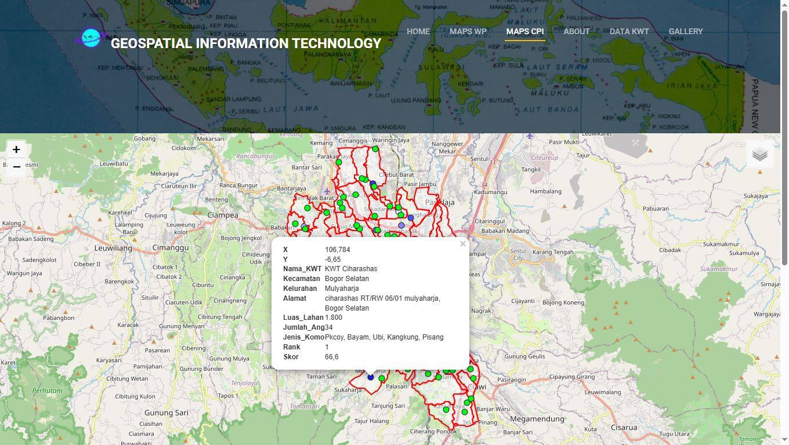

Portofolio Proyek


WebGIS Kelompok Wanita Tani Kota Bogor (KWT)
Aplikasi WebGIS interaktif untuk persebaran lokasi KWT di berbagai wilayah Kota Bogor.

Layout Peta Sebaran KWT Kota Bogor
Pembuatan peta sebaran dan layout profesional menggunakan metode Composite Performance Index (CPI).